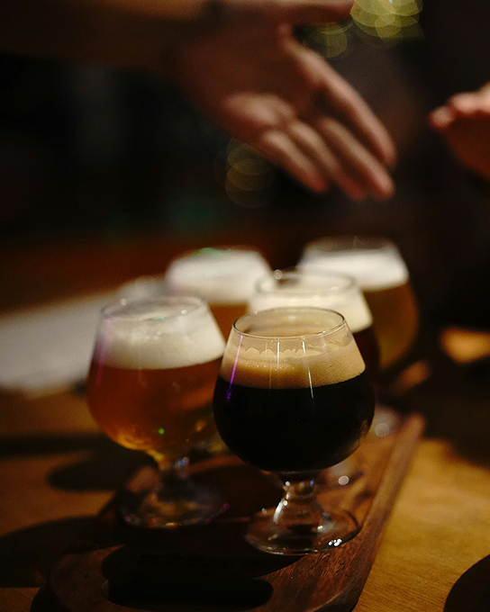

ていねいな手しごと、五反田から。
そんな風景の一部でありたいと願っています。

Aboutus
私たちについて
都心の喧騒から少し離れた五反田の路地裏で、手作りのクラフトビールを少量ずつ丁寧に仕込んでいます。地域に根ざした味わいと、季節ごとの限定ビールが私たちのこだわりです。
店内には小さなタップルームも併設しており、できたてのビールをその場で楽しんでいただけます。
今日も、五反田でしか味わえない一杯をお届けします。